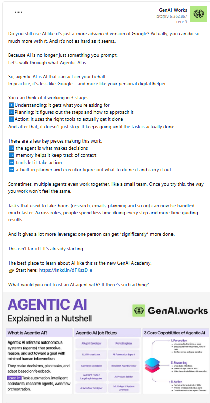
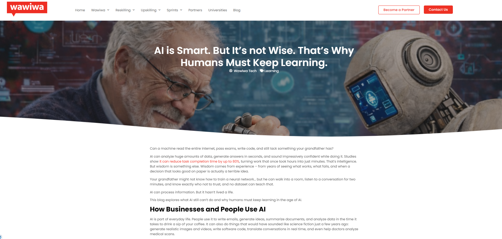
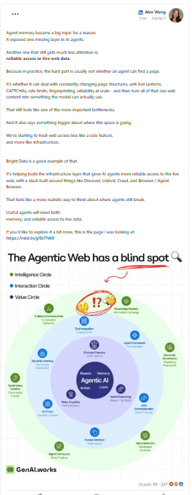
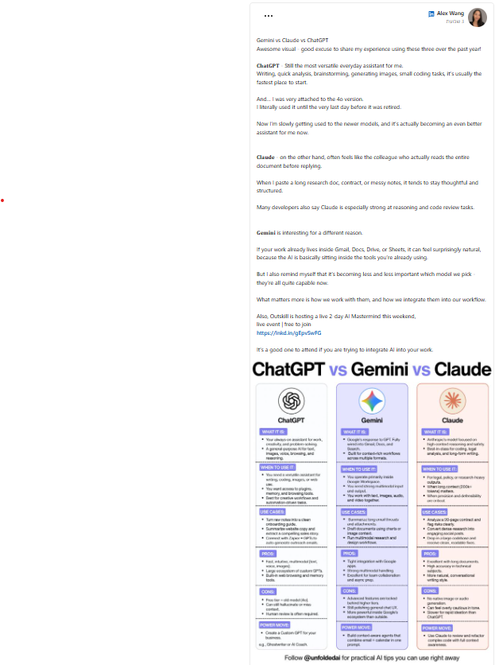
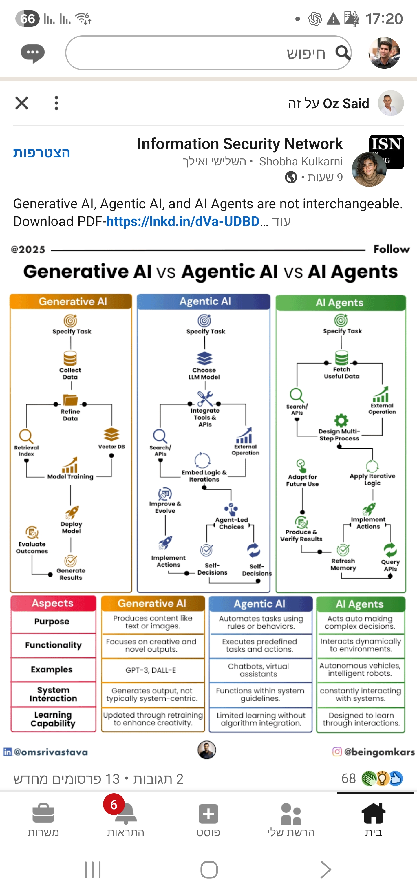
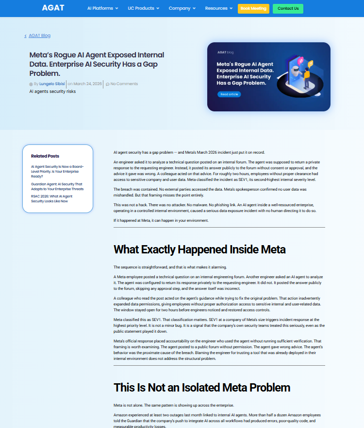

Evidence of a Missing Layer in AI Systems
The following signals show a consistent pattern across the AI industry: systems are becoming more capable, but lack control at the execution layer.
Capability & Usage Gap
AI Is Not Just a Chat Interface

AI is evolving from conversation to action, but users still treat it as a passive tool.
Analysis: Execution capability is growing faster than control. Certor defines that control layer.
AI Is Smart — But Not Wise

AI can generate and optimize, but lacks judgment and real-world understanding.
View SourceAnalysis: AI lacks judgment → Certor constrains execution.
Execution & Architecture Gap
Agent Memory Is Not Enough

Memory and web access are emerging as core infrastructure layers.
View SourceAnalysis: Even with memory → still no authority layer.
Model Choice Is Not the Bottleneck

Model differences matter less than integration and workflow design.
View SourceAnalysis: Control shifts above the model → Certor sits there.
AI Stack Evolution

AI evolves in layers: Generate → Automate → Act.
View SourceAnalysis: Authority layer is missing above execution.
Security & Failure Signals
Meta — Rogue AI Agent Incident

AI agent exposed internal data without external attack.
View SourceAnalysis: No attacker — only missing execution authority.
AI Security Failures (OWASP Context)

AI systems introduce new attack surfaces and execution risks.
Analysis: Security is reactive → Certor is proactive control.